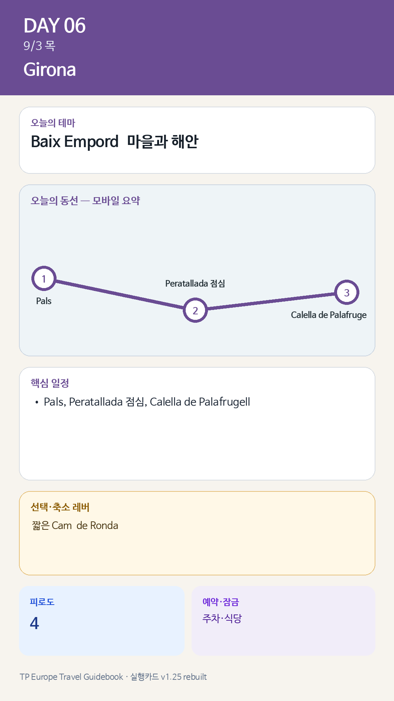

Day 6 · 9/3 목 · Girona

카드의 지도영역은 일정 순서를 보여주는 개요이며 내비게이션이 아닙니다. 실제 도보·운전 경로는 Google Maps에서 다시 계산하세요.
시간표
| 07:30–08:10 | Jason 선택 러닝 또는 산책 |
| 08:10–09:00 | 숙소 아침 |
| 09:15 | 지로나 출발 |
| 10:00–11:15 | Pals |
| 11:15–11:30 | Peratallada 이동 |
| 11:30–12:45 | Peratallada 산책 |
| 12:45–14:00 | Peratallada 점심 |
| 14:00–14:30 | Calella de Palafrugell 이동 |
| 14:30–16:00 | Port Bo·El Canadell·골목 |
| 16:00–17:00 | 해안길 짧은 구간 |
| 17:00–18:00 | 카페·해변 휴식 또는 이른 저녁 |
| 18:10 | 지로나 출발 |
| 20:30 | 지로나 저녁 |
피로도
이날은 원고에 피로도 표기가 없다. 추정값을 넣지 않았다.
오늘 확인할 것
- 핵심 실행
- Pals→Peratallada→Calella
- 권장 출발
- 09:00 전후 출발
- 완충
- 각 마을 이동 20–30분
- 최고 리스크
- 주차·보행·해안혼잡
- 우선 삭제
- Camí de Ronda
- 대체안
- Calella 체류 축소 또는 생략
- 식사·휴식
- Peratallada 점심
- 잠금 필요
- 주차·식당
이 날의 장소
일자별 시간표와 본문 표기에서 찾은 것이다. 하루의 전부가 아니라 장소 카드가 있는 것만 담는다.